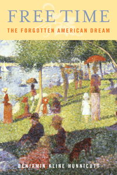

A magisterial overview of the history of the fight for leisure in the United States
A magisterial overview of the history of the fight for leisure in the United States


 A magisterial overview of the history of the fight for leisure in the United States
A magisterial overview of the history of the fight for leisure in the United States

|  |
Free TimeThe Forgotten American DreamBenjamin Kline Hunnicuttpaper EAN: 978-1-43990-715-3 (ISBN: 1-4399-0715-3) |
"Tweaking current thinking, which labels work as a good in itself, [Hunnicutt] shows that Americans didn�t always view labor as an object of intrinsic merit. � He offers a provocative and valuable history of a neglected idea."
—Publishers Weekly
Has the "American Dream" become an unrealistic utopian fantasy, or have we simply forgotten what we are working for? In his topical book, Free Time, Benjamin Kline Hunnicutt examines the way that progress, once defined as more of the good things in life as well as more free time to enjoy them, has come to be understood only as economic growth and more work, forevermore.
Hunnicutt provides an incisive intellectual, cultural, and political history of the original "American Dream" from the colonial days to the present. Taking his cue from Walt Whitman's "higher progress," he follows the traces of that dream, cataloging the myriad voices that prepared for and lived in an opening "realm of freedom."
Free Time reminds Americans of the forgotten, best part of the "American Dream"�that more and more of our lives might be lived freely, with an enriching family life, with more time to enjoy nature, friendship, and the adventures of the mind and of the spirit.
Excerpt available at www.temple.edu/tempress
"Benjamin Kline Hunnicutt�s new book could hardly be more timely. His central theme�that the American dream once was not confined merely to ever-growing levels of abundance�is all the more relevant in an era of climate-science denial and anti-environmentalism of various sorts. Hunnicutt provides an incisive reinterpretation of major intellectual figures whose understanding of God, sin, and predestination were melded into a celebration of the intrinsic goods that freedom from work could make available once basic material sustenance had been achieved. His scholarship is persuasive, and his book is a needed reinterpretation of labor history. It has clear relevance to some of the central debates in our politics today. I had a hard time putting Free Time down."
—John Buell, author of Politics, Religion, and Culture in an Anxious Age
"Hunnicutt suggests new, valuable ways of thinking about the ways the standard workweek emerged in the United States. It is the first time the question of work hours and the concept of �Higher Progress� has been articulated over a period spanning more than two hundred years. Hunnicutt�s ability to trace the ways this concept changed over time is one of the book�s key strengths. Free Time is a unique contribution to labor history."
—Francis Ryan, author of AFSCME�s Philadelphia Story: Municipal Workers and Urban Power in the Twentieth Century
"[Hunnicutt] offers a chronological description of the developments that have, over time, stymied our pursuit of the 'American Dream.' Hunnicutt's tenacious, years-long dedication to this topic is impressive."
—Library Journal
"In his rather intriguing book, Hunnicutt examines the erosion of the pursuit of what today might be called 'quality time,' achieved by working just enough to provide basic sustenance.... Hunnicutt traces the ways in which various Americans sought to limit the hours people worked.... [He] concludes that with the post-WW II entrenchment of Franklin Roosevelt's 'Full-Time, Full-Employment' policy first introduced during the New Deal, and the increased commercialization and passivity of leisure, Americans have forgotten why and what they are working for. Summing Up: Recommended."
—CHOICE
"Free Time is an impressive account of evolving thought about work, leisure, and progress in American history. It succeeds admirably in showing how prominent the shorter-hours vision was and provides many of the answers as to why that vision faded. Hunnicutt is thorough in documenting the various voices calling for Higher Progress through expanded leisure."
—Journal of Sociology and Social Welfare
"[T]hought-provoking and insightful.... [R]eaders will be impressed by the depth and breadth of his analysis as Hunnicutt moves seamlessly between the words and deeds of public intellectuals, educators, and politicians to workers and labor leaders. Working class and (especially) labor historians, who often narrowly understand identity at the point of production, will surely benefit from Hunnicutt's analysis and the questions he asks, but scholars from a wide variety of fields and disciplines will also find this study useful and timely.... Hunnicutt's analysis is wide-ranging and thorough.... valuable for scholars and students alike."
—American Historical Review
"Free Time's strength is in its eclectic exposition of American ideas about the value and necessity of free time..... thought-provoking."
—The Journal of American History
"As one of the handful of historians to research the vitally important yet incredibly neglected subject of work hours, all of Hunnicutt's work is essential reading for anyone in labor studies.... Free Time documents the decline of a leisure ethic, revealing some important forks in the road and some important splits within labor's ranks.... As part of a comprehensive history of the workday, this book is the only game in town chronicling the changes in an American leisure ethic.... This book remains important as a source of raw material and context for labor history specialists."
—Labor Studies
"Hunnicutt seeks to shed light on what he considers to be one of the great mysteries of our time: why did the long downward trend in work hours stall after the Great Depression? In seeking to unravel this mystery, Hunnicutt offers a panoramic view of both philosophical writings on the intrinsic merit of leisure time and the efforts of labor activists who sought to regulate work hours in the hopes of securing Walt Whitman�s �Higher Progress� for the working man and woman. It is the weaving of these two important currents that is the key contribution of this book."
—The Journal of Economic History
"Hunnicutt�s arguments resonate.... I recommend this book highly to those looking for a fresh perspective on the longstanding issue of the work�leisure tradeoff.... Hunnicutt�s thorough research and meticulous sampling of quotations serve as undeniable evidence that there once was a vision of Higher Progress that even the most hardcore skeptic can�t deny and that there could be one again. The book serves as a timely eye opener for any American worker to conduct a self-evaluation of the question 'Am I living to work, or working to live?'�
—Monthly Labor Review
Preface
Introduction: Higher Progress�the Forgotten American Dream
1. The Kingdom of God in America: Progress as the Advance of Freedom
2. Labor and the Ten-Hour System
3. Walt Whitman: Higher Progress at Mid-century
4. The Eight-Hour Day: Labor from the Civil War to the 1920s
5. Infrastructures of Freedom
6. Labor and Franklin Delano Roosevelt�s New Dream
7. Challenges to Full-Time, Full Employment
8. Labor Turns from Shorter Hours to Full-Time, Full Employment
9. Higher Progress Fades, Holdouts Persist
10. The Eclipse of Higher Progress and the Emergence of Overwork
Notes
Index
Benjamin Kline Hunnicutt is an historian and professor at the University of Iowa. He is also the author of Kellogg's Six-Hour Day and Work Without End: Abandoning Shorter Hours for the Right to Work (both Temple).
Labor Studies and Work
Sociology
American Studies
© 2015 Temple University. All Rights Reserved. This page: http://www.temple.edu/tempress/titles/2161_reg.html.